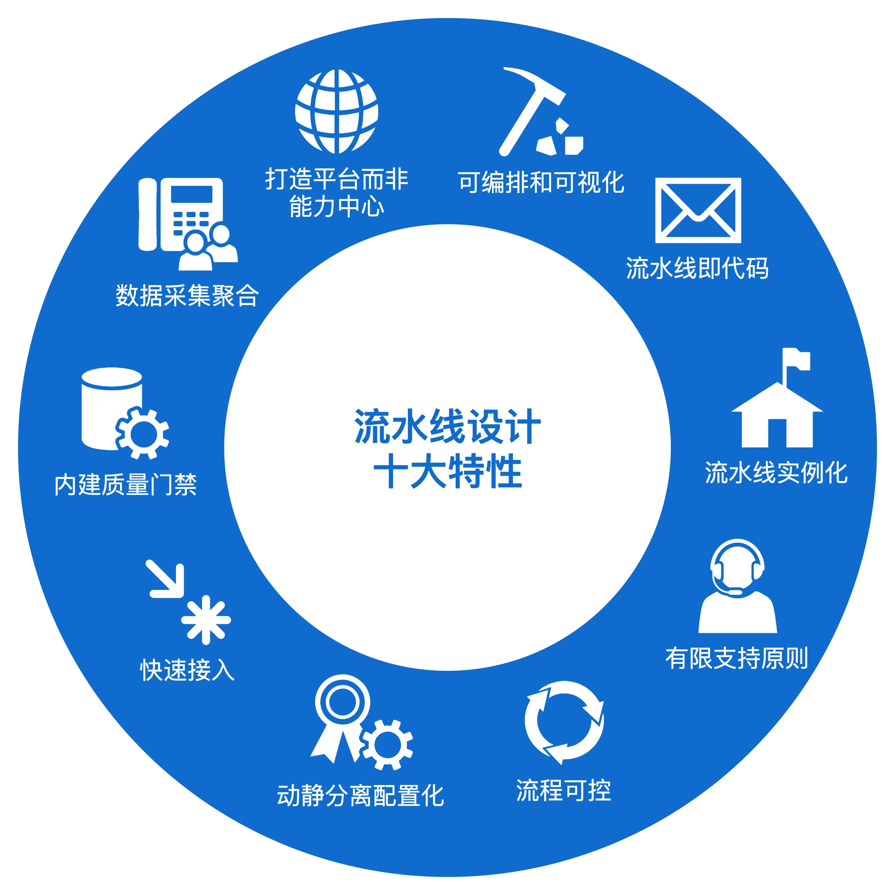
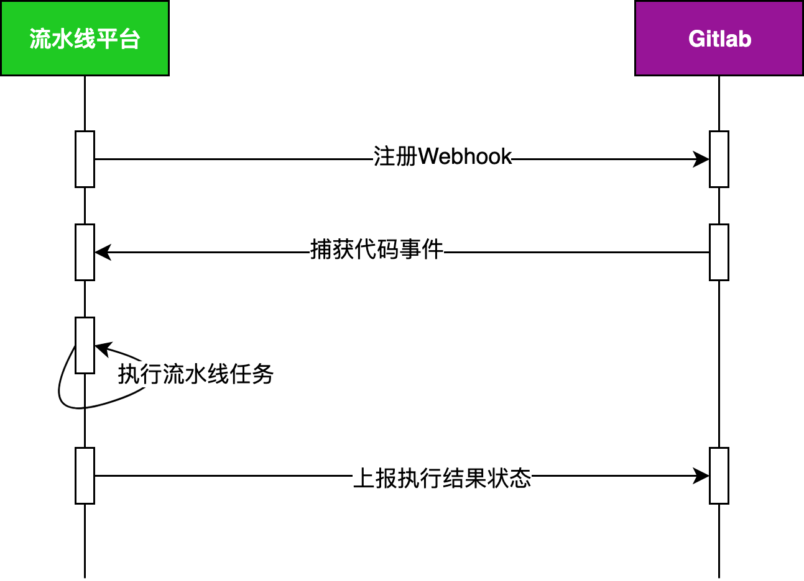
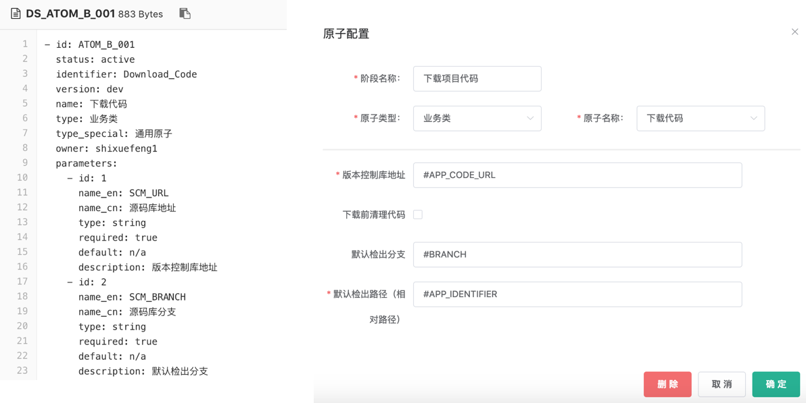

- 00 开篇词 从默默无闻到风靡全球，DevOps究竟有什么魔力？.md.html
- 01 DevOps的“定义”：DevOps究竟要解决什么问题？.md.html
- 02 DevOps的价值：数字化转型时代，DevOps是必选项？.md.html
- 03 DevOps的实施：到底是工具先行还是文化先行？.md.html
- 04 DevOps的衡量：你是否找到了DevOps的实施路线图？.md.html
- 05 价值流分析：关于DevOps转型，我们应该从何处入手？.md.html
- 06 转型之路：企业实施DevOps的常见路径和问题.md.html
- 07 业务敏捷：帮助DevOps快速落地的源动力.md.html
- 08 精益看板（上）：精益驱动的敏捷开发方法.md.html
- 09 精益看板（下）：精益驱动的敏捷开发方法.md.html
- 10 配置管理：最容易被忽视的DevOps工程实践基础.md.html
- 11 分支策略：让研发高效协作的关键要素.md.html
- 12 持续集成：你说的CI和我说的CI是一回事吗？.md.html
- 13 自动化测试：DevOps的阿克琉斯之踵.md.html
- 14 内建质量：丰田和亚马逊给我们的启示.md.html
- 15 技术债务：那些不可忽视的潜在问题.md.html
- 16 环境管理：一切皆代码是一种什么样的体验？.md.html
- 17 部署管理：低风险的部署发布策略.md.html
- 18 混沌工程：软件领域的反脆弱.md.html
- 19 正向度量：如何建立完整的DevOps度量体系？.md.html
- 20 持续改进：PDCA体系和持续改进的意义.md.html
- 21 开源还是自研：企业DevOps平台建设的三个阶段.md.html
- 22 产品设计之道：DevOps产品设计的五个层次.md.html
- 23 持续交付平台：现代流水线必备的十大特征（上）.md.html
- 24 持续交付平台：现代流水线必备的十大特征（下）.md.html
- 25 让数据说话：如何建设企业级数据度量平台？.md.html
- 26 平台产品研发：三个月完成千人规模的产品要怎么做？.md.html
- 27 巨人的肩膀：那些你不能忽视的开源工具.md.html
- 28 迈向云端：云原生应用时代的平台思考.md.html
- 29 向前一步：万人规模企业的DevOps实战转型案例（上）.md.html
- 30 向前一步：万人规模企业的DevOps实战转型案例（下）.md.html
- 期中总结 3个典型问题答疑及如何高效学习 (1).md.html
- 期中总结 3个典型问题答疑及如何高效学习.md.html
- 期末总结 在云时代，如何选择一款合适的流水线工具？.md.html
- 特别放送（一）成为DevOps工程师的必备技能（上）.md.html
- 特别放送（三）学习DevOps不得不了解的经典资料.md.html
- 特别放送（二）成为DevOps工程师的必备技能（下）.md.html
- 特别放送（五）关于DevOps组织和文化的那些趣事儿.md.html
- 特别放送（四）Jenkins产品经理是如何设计产品的？.md.html
- 结束语 持续改进，成就非凡！.md.html
- 捐赠
24 持续交付平台：现代流水线必备的十大特征（下）
你好，我是石雪峰。今天，我来接着跟你聊聊现代流水线必备的十大特性的下半部分，分别是流程可控、动静分离配置化、快速接入、内建质量门禁和数据采集聚合。

特性六：流程可控
在上一讲中，我提到过，流水线是覆盖软件交付端到端完整过程的平台，也就是说，流水线的主要作用是驱动软件交付过程的效率提升和状态可视化。
在线下交流的时候，我发现，不少同学对这个概念的理解都存在着一些误区，他们觉得需要建设一条大而全的流水线，在这条流水线上完成软件交付的所有过程。
其实，流水线是要覆盖端到端的流程，但这并不是说，一定要有一条流水线跑通从代码提交开始到软件发布为止的全流程。实际上，在企业中，往往是多条流水线覆盖不同的环节，比如开发阶段流水线、集成阶段流水线，以及部署阶段流水线。这些流水线一起覆盖了整个软件交付流程。
这就体现了流水线的流程可控性，流水线可以为了满足不同阶段的业务目标而存在，并且每条流水线上实现的功能都不相同。为了达到这个目的，流水线需要支持多种触发方式，比如定时触发、手动触发、事件触发等。其中，事件触发就是实现持续集成的一个非常重要的能力。
以Gitlab为例，你可以在代码仓库中添加Webhook，Webhook的地址就是触发流水线任务的API，这个API可以通过Gitlab的API实现自动注册。
需要注意的是，要实现Webhook的自动注册，访问Gitlab的账号时必须要有对应代码仓库的Master级别权限，否则是无法添加成功的。
当注册完成Webhook，代码仓库捕获到对应的事件后，比如代码Push动作，会自动调用Webhook，并且将本次代码提交的基础信息（比如分支、提交人等）传递给注册地址。
流水线平台接收到接口访问后，可以根据规则过滤请求，最典型的就是触发分支信息。当满足规则条件后，则执行流水线任务，并将结果再次通过Gitlab的API写回到代码仓库中。这样一来，每次提交历史都会关联一个流水线的执行记录，可以用于辅助代码合并评审。
我画了一张流程图，它展示了刚刚我所描述的过程以及调用的接口信息。

除了多种触发方式以外，流水线还需要支持人工审批。这也就是说，每个阶段的流转可以是自动的，上一阶段完成后，就自动执行下一阶段；也可以是手动执行的，必须经过人为确认才能继续执行，这里的人为确认需要配合权限的管控。
其实，人工审批的场景在软件交付过程中非常常见。如果是自建流程引擎，人工审批就不难实现，但是，如果你是基于Jenkins来实现这个过程，虽然Jenkins提供了input方法来实现人为审批的功能，但我还是比较推荐你自己通过扩展代码来实现。比如，将每个原子的执行过程抽象为before()、execute() 和 after() 三个阶段，可以将人工审批的逻辑写在before()或者after()方法中。
这样一来，对于所有原子都可以默认执行基类方法，从而获得人工审批的能力。是否开启人工审批，可以通过原子配置中的参数实现。你就不需要在每个原子中人工注入input方法了，流水线的执行过程会更加清晰。
我给你分享一个抽象原子类的设计实现，如下面的代码所示：
abstract class AbstractAtom extends AtomExecution {
def atomExecution() {
this.beforeAtomExecution()
// 原子预处理步骤，你可以将通用执行逻辑，比如人工审批等写在这里
echo('AtomBefore')
before()
// 原子主体核心逻辑
echo('AtomExecution')
execute()
// 原子后处理步骤，你可以将通用执行逻辑，比如人工审批等写在这里
echo('AtomAfter')
after()
this.afterAtomExecution()
}
}
特性七：动静分离配置化
流水线的灵活性不仅体现在流程可编排、流程可控方面，每一个原子都需要持续迭代功能。那么，如何在不改变代码的情况下，实现原子的动态化配置呢？
这就需要用到动静分离的设计方法了。那么，什么是动静分离呢？
其实，动静分离就是一种配置化的实现方式。这就是指，将需要频繁调整或者用户自定义的内容，保存在一个静态的配置文件中。然后，系统加载时通过读取接口获取配置数据，并动态生成用户可见的交互界面。
你可能觉得有点抽象，我来给你举个例子。你可以看一下下面这张截图。

如果我想对某一个原子扩展一个新的功能，提供一个新的用户配置参数，传统的做法就是在前端页面中增加一段html代码。这样的话，原子功能的每一次变更都需要前端配合调整，原子的独立性就不复存在了，而是跟页面强耦合在一起。
另外，前端页面加入了这么多业务逻辑，如果哪天需要同时兼容不同的原子版本，那么前端页面也需要保存两套。一两个应用这么玩也就罢了，如果有上百个应用，那简直没法想象。
那么，具体要怎么做呢？最重要的就是定义一套标准的原子数据结构。
比如，在上面这张图的左侧部分，我给你提供了一个参考结构。对于所有的原子来说，它对外暴露的功能都是通过这套标准化的方式来定义的。前端在加载原子的时候，后端提供的接口获取原子的数据结构，并按照约定的参数类型，渲染成不同的控件类型。
不仅如此，控件的属性也可以灵活调整，比如控件的默认值是什么，控件是否属于必填项，是否存在可输入字符限制等等。那么，当你想增加一个新的参数的时候，只需要修改原子配置，而不需要修改前端代码。结构定义和具体实现的分离，可以大幅简化原子升级的灵活性。
无论在原子结构设计，还是前后端交互等领域，定义一个通用的数据结构是设计标准化的系统的最佳实践。
对于流水线平台来说，除了原子，很多地方都会用到配置化的方式。比如，系统报告中体现的字段和图表类型等，就是为了满足用户差异化的需求。而且，将配置纳入版本控制，你也可以快速查询原子配置的变更记录，达到一切变更皆可追溯的目标。
特性八：快速接入
前面我提到过，流水线的很多能力都不是自己提供的，而是来源于垂直业务平台。那么，在建设流水线平台的时候，能否快速地实现外部平台能力的接入，就成了一个必须要解决的问题。
经典的解决方式就是提供一种插件机制，来实现平台能力的接入。比如，Jenkins平台就是通过这种方式，建立了非常强大的插件生态。但是，如果每个平台的接入都需要企业内部自己来实现插件的话，那么，企业对于平台接入的意愿就会大大降低。
实际上，接入成本的高低，直接影响了平台能力的拓展，而流水线平台支持的能力多少，就是平台的核心竞争力。
那么，有没有一种更加轻量化的平台接入方法呢？我给你提供一个解决思路：自动化生成平台关联的原子代码。
在第七个特性中，我们已经将原子的数据结构通过一种标准化的描述式语言定义完成了，那原子的实现代码是否可以也自动化生成呢？实际上，在大多数情况下，外部平台打通有两种类型。
- 平台方提供一个本地执行的工具，也就是类似SonarQube的Scanner的方式，通过在本地调用这个工具，实现相应的功能。
- 通过接口调用的方式，实现平台与平台间的交互，调用的实现过程无外乎同步和异步两种模式。
既然平台接入存在一定的共性，那么，我们就可以规划解题方法了。
首先，流水线平台需要定义一套标准的接入方式。以接口调用类型为例，接入平台需要提供一个任务调用接口、一个状态查询接口以及一个结果上报接口。
- 任务调用接口：用于流水线触发任务，一般由接入平台定义和实现。对于比较成熟的平台来说，这类接口一般都是现成的。接口调用参数可以直接转换成原子的参数，一些平台的配置化信息（比如接口地址、接口协议等），都可以定义在原子的数据结构中。
- 状态查询接口：用于流水线查询任务的执行状态，获取任务的执行进度。这个接口也是由接入平台定义和实现的，返回的内容一般包括任务状态和执行日志等。
- 数据上报接口：用于任务将执行结果上报给流水线平台进行保存。这个接口由流水线平台定义，并提供一套标准的数据接口给到接入方。接入方必须按照这个标准接口上报数据，以简化数据上报的过程。
通过将平台接入简化为几个标准步骤，可以大幅简化平台接入的实现成本。按照我们的经验，一套平台的接入基本都可以在几天内完成。
特性九：内建质量门禁
在第14讲中，我给你介绍了内建质量的理念，以及相关的实施步骤。你还记得内建质量的两大原则吗？
- 问题发现得越早，修复成本就越低；
- 质量是每个人的责任，而不是质量团队的责任。
毫无疑问，持续交付流水线是内建质量的最好阵地，而具体的展现形式就是质量门禁。通过在持续交付流水线的各个阶段注入质量检查能力，可以让内建质量真正落地。
一般来说，流水线平台都应该具备质量门禁的能力，我们甚至要把它作为流水线平台的一级能力进行建设。在流水线平台上，要完成质量规则制定、门禁数据收集和检查，以及门禁结果报告的完整闭环。质量门禁大多数来源于垂直业务平台，比如，UI自动化测试平台就可以提供自动化测试通过率等指标。只有将用于门禁的数据上报到流水线平台，才能够激活检查功能。
那么，质量门禁的功能应该如何设计呢？
从后向前倒推，首先是设置门禁检查功能。这个功能也是一种流水线的通用能力，所以和人工审核的功能类似，也可以放在原子执行的after()步骤中，或者独立出来一个步骤就叫作qualityGates()。
每次原子执行时都会走到这个步骤，在步骤中校验当前流水线是否已经开启了门禁检查功能，并且当前原子是否提供了门禁检查能力。如果发现已配置门禁规则，而且当前原子在检查范围内，就等待运行结果返回，提取数据，并触发检查工作。你可以参考下面的示例代码。
def qualityGates() {
// 获取质量门禁配置以及生效状态
boolean isRun = qualityGateAction.fetchQualityGateConfig(host, token, pipelineId, oneScope)
// 激活检查的情况等待结果返回，最多等待30分钟
if (isRun) {
syncHandler.doSyncOperation(
30,
'MINUTES',
{
// 等待执行结果返回，质量门禁功能必须同步执行
return httpUtil.doGetToExternalResult(host, externalMap.get(oneScope), token)
})
// 提取返回数据
qualityGateAction.fetchExecutionResult(host, token, externalMap.get(oneScope), buildId)
// 验证质量门禁
qualityGateAction.verify(oneScope)
}
}
解决了如何检查的问题，我们再往前一步，看看质量门禁的规则应该如何定义。
在企业内，定义和管理质量规则的一般都是QA团队，所以需要给他们提供一个统一入口，方便他们进行规则配置和具体数值的调整。
对质量门禁来说，检查的类型可以说是多种多样的。
- 从比较类型来说，可以比较结果大于、等于、小于、包含、不包含等；
- 从比较结果来说，可以是失败值、警告值。失败值是指，只要满足这个条件，就直接终止流水线执行。而警告值是说，如果满足这个条件，就给一个警告标记，但是不会终止流水线执行。
这些条件，往往需要根据QA团队定义的规则来适配。
质量规则可以由一组子规则共同组成，比如，单元测试通过率100%、行覆盖率大于50%、严重阻塞代码问题等于0……
所以，你看，想要定义一个灵活的质量门禁，就需要在系统设计方面花点功夫了。在之前的实践中，我们就采用了适配器加策略模式的方式，这样可以满足规则的灵活扩展。
策略模式是23种设计模式中比较常用的一种。如果你之前没有了解过，我给你推荐一篇参考文章。如果想要深入学习设计模式，极客时间也有相应的专栏，或者你也可以购买经典的《设计模式》一书。其实，核心就在于面向接口而非面向过程开发，通过实现不同的接口类，来实现不同的检查策略。
特性十：数据聚合采集
作为软件交付过程的载体，流水线的可视化就体现在可以在流水线上看到每一个环节的执行情况。这是什么意思呢？
在系统没有打通的时候，如果你想看测试的执行结果，就要跑到测试系统上看；如果想看数据库变更的执行状态，就得去数据库管理平台上看。这里的问题就是，没有一个统一的地方可以查看本次发布的所有状态信息，而这也是流水线的可视化要解决的问题。
当平台的能力以原子的形式接入流水线之后，流水线需要有能力获取本次执行相关的结果数据，这也是在平台对接的时候，务必要求子系统实现数据上报接口的原因。至于上报数据的颗粒度，其实并没有一定之规，原则就是满足用户对最基本的结果数据的查看需求。
以单元测试为例，需要收集的数据包括两个方面，一个是单元测试的执行结果，比如一共多少用例，执行多少，成功失败分别多少。另外，即使收集覆盖率信息，至少也要包含各个维度的覆盖率指标。但是，对于具体每个文件的覆盖率情况，这种粒度的数据量比较大，可以通过生成报告的方式来呈现，不用事无巨细地都上报到流水线后台进行保存。
在企业内部没有建立独立的数据度量平台之前，流水线平台承载了全流程数据的展示功能。但是，毕竟流水线的目标是为了展示客观的数据结果，而不是在于对数据进行分析挖掘。所以，当企业开始建设数据度量平台时，流水线也可以作为数据源之一，满足度量平台对于各项工程能力的度量需求。
总结
到此为止，我给你完整地介绍了现代流水线必备的十大特性。其实，流水线的功能特性远不止这10个。随着云计算和云原生应用的发展，云原生流水线也成为了越来越多人讨论的话题。关于这方面的内容，我会在后续的课程中给你分享我的一些想法。
可以说，一个好的持续交付流水线平台，就是企业DevOps能力的巅峰展现。这也难怪，越来越多的公司开始在这个领域发力，甚至把它作为核心能力对外输出，成为企业商业化运作的一份子。深入掌握这10个特性，并把它们落实在流水线平台的建设中，是企业DevOps平台建设的必经之路。
就像美国著名女演员莉莉·汤姆林（Lily Tomlin）的那句经典名言所说的那样：
The road to success is always under construction.（通往成功的道路，永远在建设之中）
企业迈向持续交付的成功之路也不是一帆风顺的，永无止境的追求是指引我们前进的方向，也希望你能在流水线建设之路上不断思考，不断实践，持续精进。
思考题
你目前在使用的流水线平台有哪些不好用、待改进，或者是“反人类”的设计吗？看完这两讲的内容，你有什么新的想法和改进建议吗？
欢迎在留言区写下你的思考和答案，我们一起讨论，共同学习进步。如果你觉得这篇文章对你有所帮助，也欢迎你把文章分享给你的朋友。
© 2019 - 2023 Liangliang Lee. Powered by gin and hexo-theme-book.